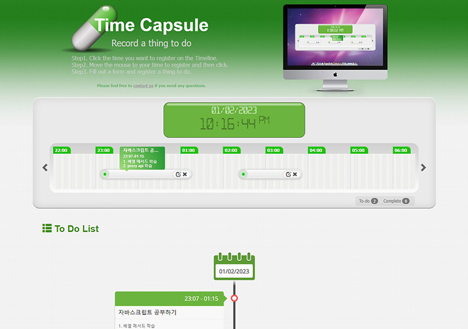

1. 시간을 기록하다. Time Capsule
Time Capsule은 2016년에 코드캐년에 등록할 목적으로 만든 작은 프로젝트이다. 흔한 ToDo 리스트를 타임라인으로 시각화하여 타임라인에 시간과 할일을 기록하고 히스토리 방식으로 할일을 보여주는 방식으로 UI에 재미를 주고자 기획했다.
Time Capsule은 2016년에 코드캐년에 등록할 목적으로 만든 작은 프로젝트이다. 흔한 ToDo 리스트를 타임라인으로 시각화하여 타임라인에 시간과 할일을 기록하고 히스토리 방식으로 할일을 보여주는 방식으로 UI에 재미를 주고자 기획했다.